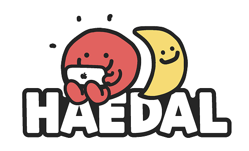

리팩터링
마틴 파울러 · 한빛미디어
2권 보유 · 1권 대여 가능
A-019대여 가능

대여도 반납도 같은 버튼에서 시작합니다. 스캔하면 시스템이 어느 쪽인지 알아서 판단합니다.
라벨이 지워졌거나 카메라를 쓸 수 없으면 아래에서 찾으세요.
해가 기울수록 반납일이 가깝습니다.
오브젝트가 반납일에서 2일 지났습니다. 연체 중에도 대여는 막히지 않습니다. 다음 방문에 함께 돌려놓으세요.
마틴 파울러 · 한빛미디어
2권 보유 · 1권 대여 가능
마틴 클레프만 · 위키북스
펠리에너 헤르만스 · 제이펍
앤절라 더크워스 · 비즈니스북스
조시 골드버그 · 한빛미디어
데이비드 토머스 · 인사이트
블라드 코노노프 · 위키북스
제임스 클리어 · 비즈니스북스